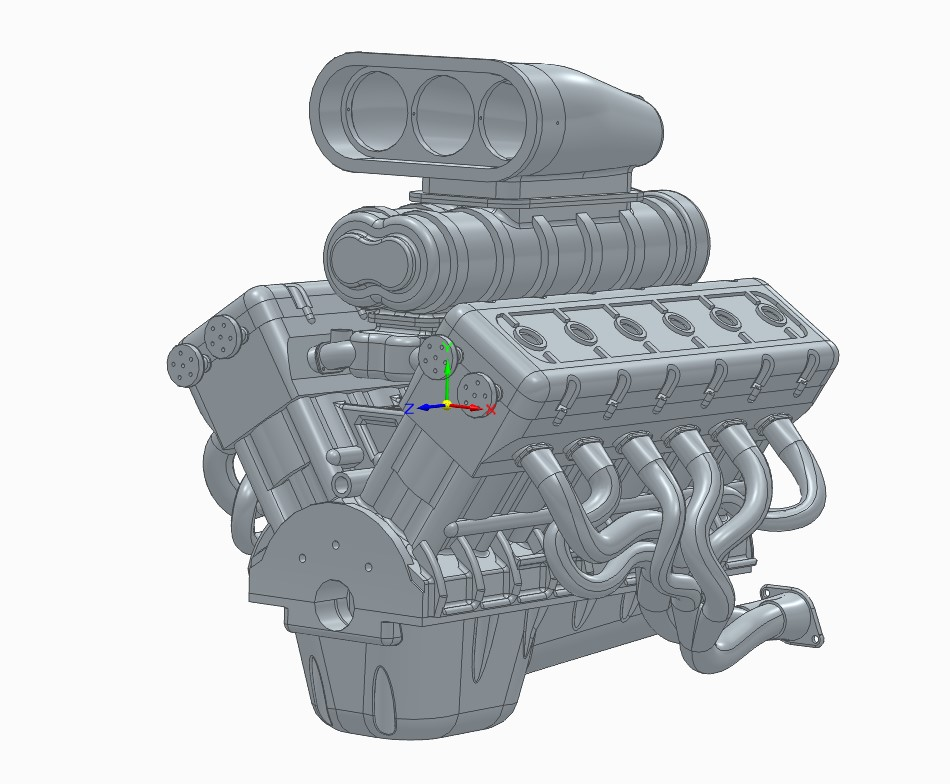

IC Engine Design Work
Why these are here
Mechanical design is what I enjoy most alongside electronics and firmware — modeling full IC engine assemblies part by part in CAD. Every component designed from first principles: cylinder layout, crank geometry, valve train, and cooling. Two complete designs, both rendered and assembled without a kit or reference model.
V12 Engine
A complete V12 engine modeled as a full assembly — cylinder block, crankshaft, connecting rods, pistons, valve train, and intake/exhaust manifolds.

16-Cylinder Radial Engine
A complete 16-cylinder radial engine assembly. Radial layouts demand a different approach to crank throw, master-rod geometry, and cooling than inline or V-configurations — the star pattern is what makes radial engines visually striking and mechanically interesting.

→ Radial engine model is published on GrabCAD.